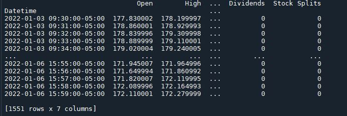

Общие вопросы
Для Anaconda устанавливаем по инструкции
Состав библиотеки очень простой, всего три модуля:
Практически все методы находятся в модуле Tickers.
Модуль download предназначен для быстрой загрузки исторических данных нескольких тикеров одновременно.
Модуль pandas_datareader предназначен для обратной совместимости с устаревшим кодом, который мы проигнорируем как не относящийся к делу, поскольку, если вы читаете это, вы, вероятно, новый пользователь библиотеки!
- yf.Tickers
- yf.download
- yf.pandas_datareader
Во-первых, давайте импортируем yfinance как yf и создадим себе объект тикера для определенной акции. У нас акции компании Apple и их тикер "aapl"
import yfinance as yf
apple = yf.Ticker("aapl")
print(apple)>> yfinance.Ticker object <AAPL>
Помните, что теперь мы используем этот объект тикера apple практически для всего — вызывая для него различные методы.
метод history()
Чтобы получить исторические данные, мы хотим использовать метод history(), который является наиболее «сложным» методом в библиотеке yfinance.
В качестве входных данных он принимает следующие параметры:
period: период для получения (скачивания) данных (так же для указания периода можно использовать параметры start и end) Допустимые значения периодов:
- 1d
- 5d
- 1mo
- 3mo
- 6mo
- 1y
- 2y
- 5y
- 10y
- ytd
- max
interval: интервал (1m одноминутный интервал доступен только для последних 7 дней, а интервал меньше 1 дня для последних 60 дней) Допустимые значения интервалов:[1m, 2m, 5m, 15m, 30m, 60m, 90m, 1h, 1d, 5d, 1wk, 1mo, 3mo]
start: если не используется period – в формате (yyyy-mm-dd) или datetime.
end: если не используется period – в формате (yyyy-mm-dd) или datetime.
prepost: Включать ли данные с пре-маркета и пост-маркета? (по умолчанию = False) - обычно нет смысла менять значение по умолчанию
auto_adjust: Автоматически приводить к одному маштабу(выравнивать) цены (Open/High/Low/Close)? (по умолчанию = True). Важно при сплитах и т.п.
actions: скачивать события по дивидендам и делениям? (по умолчанию = True)
Это может показаться немного сложным, но в основном вы будете просто изменять период (или начало и конец) и параметры интервала.
Например, чтобы получить 1-минутные исторические данные для Apple между 01/02/2022 и 01/07/2022 (британский формат), мы просто используем объект тикера, который мы создали и запустили. Обратите внимание, что для минутных данных запрошенный диапазон должен быть в пределах последних 30 дней.
apple_historical = apple.history(start="2022-01-02", end="2022-01-07", interval="1m")
print(apple_historical)
Фундаментальные параметры
Соотношение цены и прибыли (Price to Earnings Ratio)
Вы можете получить соотношение цены и прибыли с помощью метода Ticker.info().
Ticker.info() возвращает словарь с широким спектром информации о тикере, включая такие вещи, как краткое описание, количество сотрудников, рыночная капитализация, объем, соотношение P/E, дивиденды и т. д. — рекомендуем ознакомиться с ним самостоятельно. так как это занимает много места, чтобы показать, но, короче говоря, если вы не можете найти информацию, которую ищете, с помощью других методов, попробуйте метод info()!
Чтобы получить точное соотношение цены и прибыли, поищите в словаре слово «forwardPE»:
aapl = yf.Ticker("aapl")
print(aapl.info['forwardPE'])Ссылки по теме
- algotrading101.com yfinance Library – A Complete Guide + exaple code ipynb
- algotrading101.com Alpha Vantage – Introduction Guide
- compucademy.net article – how to retrieve stock data using Python and the YFinance library